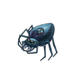
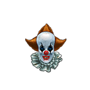
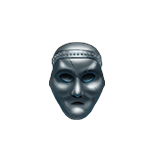
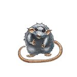
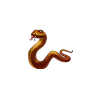

Получено: файл; исходный URL. Иллюстрация в отдельной статье ViveR_9 «Коллекция фобий»; исходный файл без перекодирования. Авторство отдельно не установлено. Страница: источник.

Коллекция фобий
Браузерная социальная версия; историческая статья; дата редакции неизвестна- Тип
- Коллекции
- Версия и дата
- Браузерная социальная версия; историческая статья; дата редакции неизвестна
Элементы коллекции















Данные по источнику · Браузерная социальная версия · историческая статья; дата редакции неизвестна
Предварительно: один материал, требуется сверка. Требуется сверка.
- Состав (источник Zombie-island)
- Паук; Клоун; Жуткая маска; Мышь; Змея.
- Награда (источник Zombie-island)
- 350 Опыт; 1 Зуб дракона.
- Коллекцию фобий можно найти в ценностях и сокровищах
- Мистический; Северный бриллиант; Валентинка; Презент; Богатырский презент; Цирковой шатер; Праздничный презент; Осенний презент 3.
- Коллекция фобий попадается на Пиратских островах Зомби Фермы
- Пиратский сундук.
Данные по источнику · браузерная версия; платформа не указана · дата редакции не установлена
Предварительно: Содержимое списка: изображения и колонки могут терять смысл при извлечении текста; отдельная страница и дата не проверены. Подписи alt иногда ошибочны.. Требуется сверка.
- Текст карточки из каталога
- 350 опыта и 1 зуб дракона Паук Клоун Жуткая маска Мышь Змея Где можно найти : в Мистическом подарке
Данные по источнику · Браузерная версия ВКонтакте; редакция не установлена · 05.10.2018 — дата публикации; дата последующей редакции неизвестна
Предварительно: Фанатская статья: вероятность находки не указана; независимость от других справочников не установлена.. Требуется сверка.
- Состав
- Паук; Клоун; Жуткая маска; Мышь; Змея.
- Обмен
- 1 Зуб дракона и 350 опыта.
- Получение
- Рулетки Палатки горожан, Карапуза, Флага Австралии; задание «Кассета»; ценности Рога фаната, Презент, Мистический, Богатырский презент, Валентинка, Кулон и другие.
- Палочками
- Октавий, Пончик-победитель и Подземные грибы.
- Применение
- В строительстве Зомби-Кактуса и Кареты; в заданиях «Запчасти», «Потрачено», «Перевал №3».
Связанные сущности
нет проверенных связей — требуется сверка.